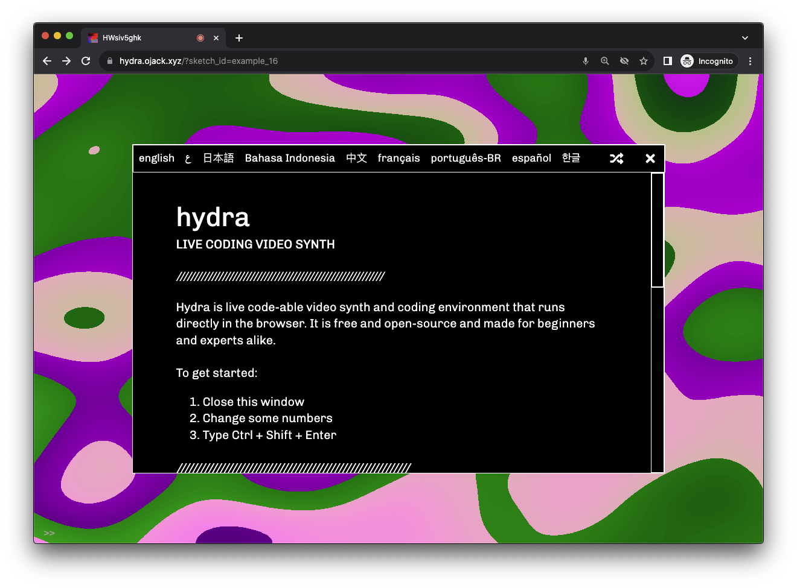

What is Hydra? #

Hydra is a live code-able video synth and coding environment that runs directly in the browser. It is free and open-source, and made for beginners and experts alike. You can simply open the hydra web editor on a laptop or mobile device to get started.
Hydra is written in JavaScript and compiles to WebGL under the hood. The syntax is inspired by analog modular synthesis, in which chaining or patching a set of transformations together generates a visual result.
About #
Hydra can be used: #
- to mix and add effects to camera feeds, screen-shares, live streams, and videos
- to create generative and audio-reactive visuals, and share them online with others
- in combination with other javascript libraries such as P5.js, Tone.js, THREE.js, or gibber
- to add interactive video effects to a website
- to experiment with and learn about video feedback, fractals, and pixel operations
- to stream video between browsers and live-jam with others online
Further resources and next steps #
For more information and instructions, see: quick start, a list of hydra functions, the learning area, the community database of projects and tutorials, a gallery of user-created sketches, and the source code on github.
Hydra was created by olivia jack and is supported by a community of contributors. If you enjoy using Hydra, please consider donating to support continued development.
Extra special thanks the Clinic for Open Source Arts for generously supporting the creation of this documentation website!
We recognize all types of contributions. This project follows the all-contributors specification. Instructions to add yourself or add contribution emojis to your name are here.